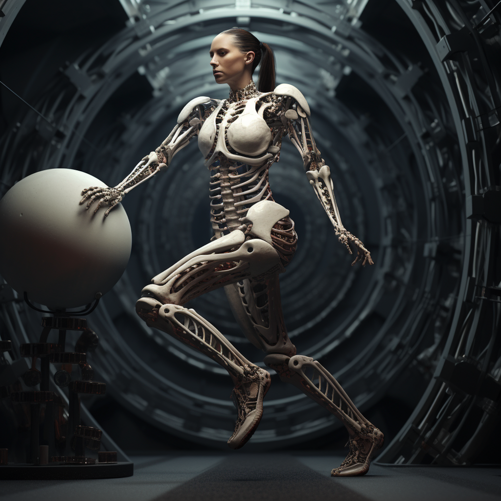
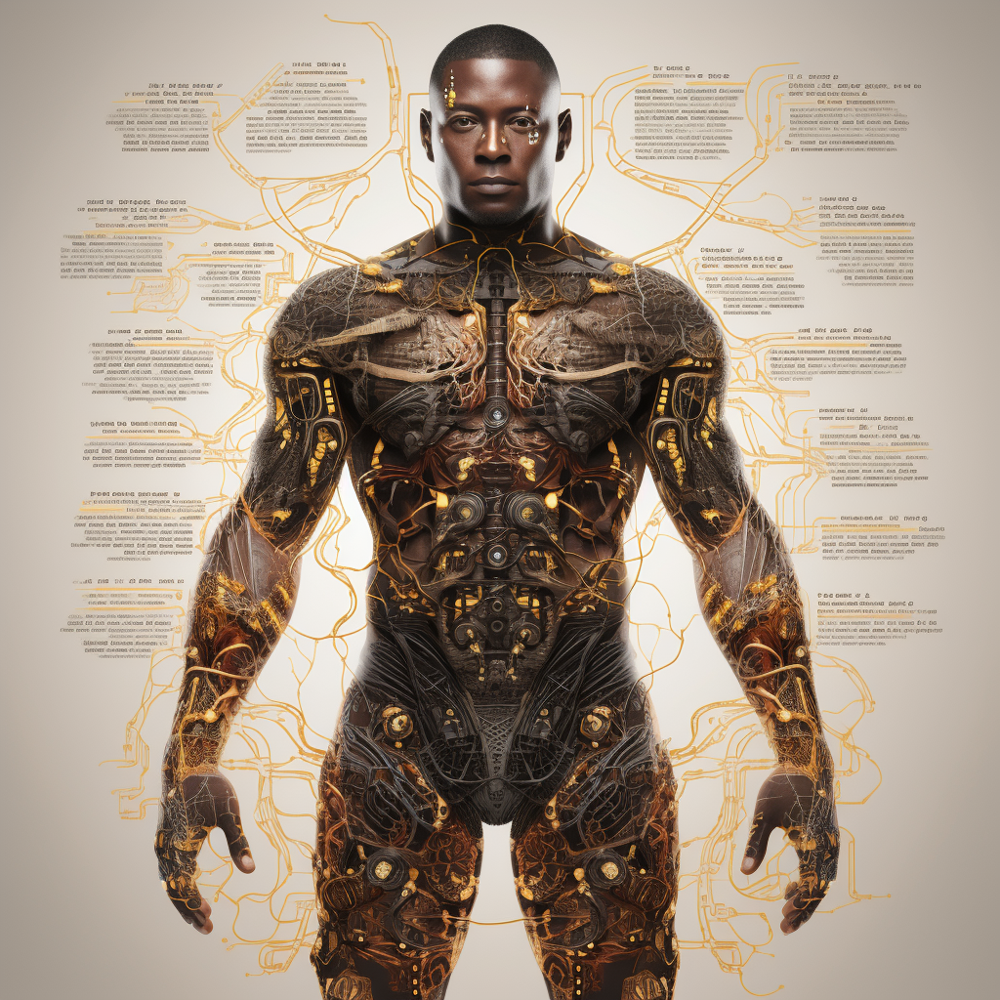
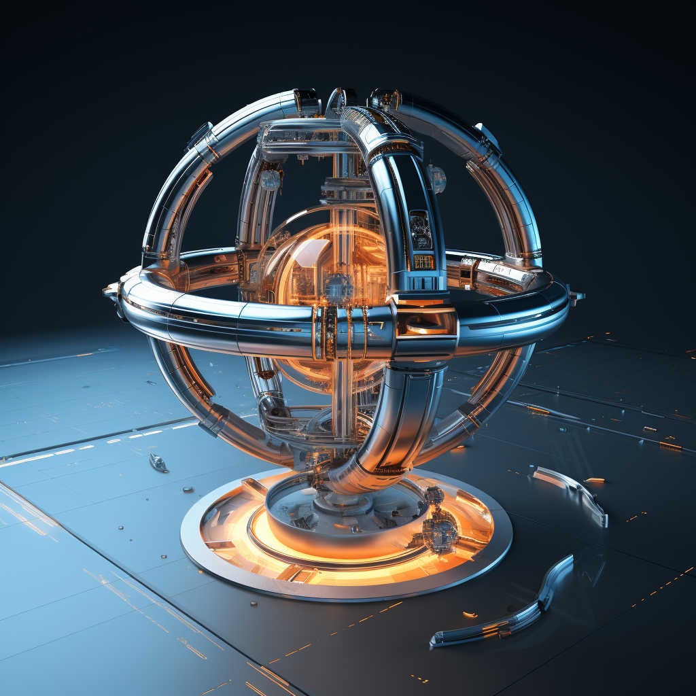
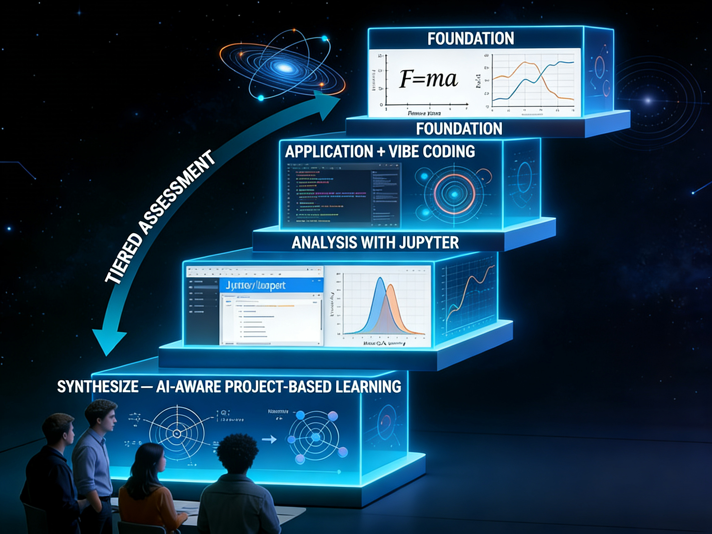
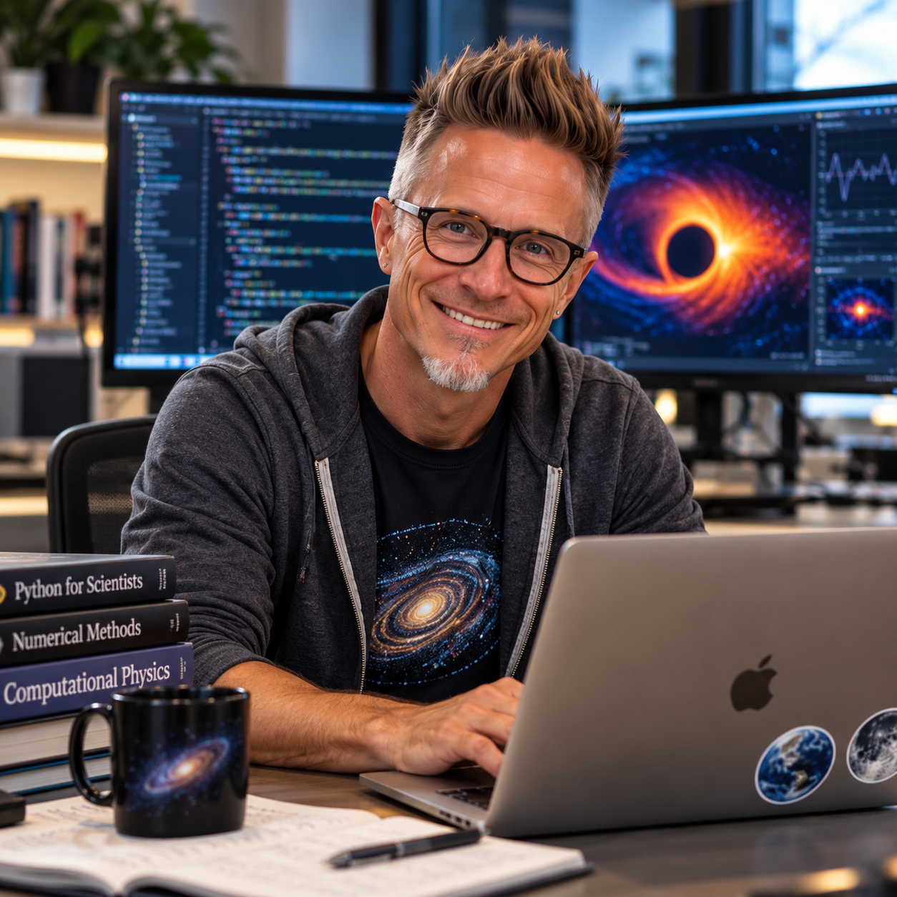
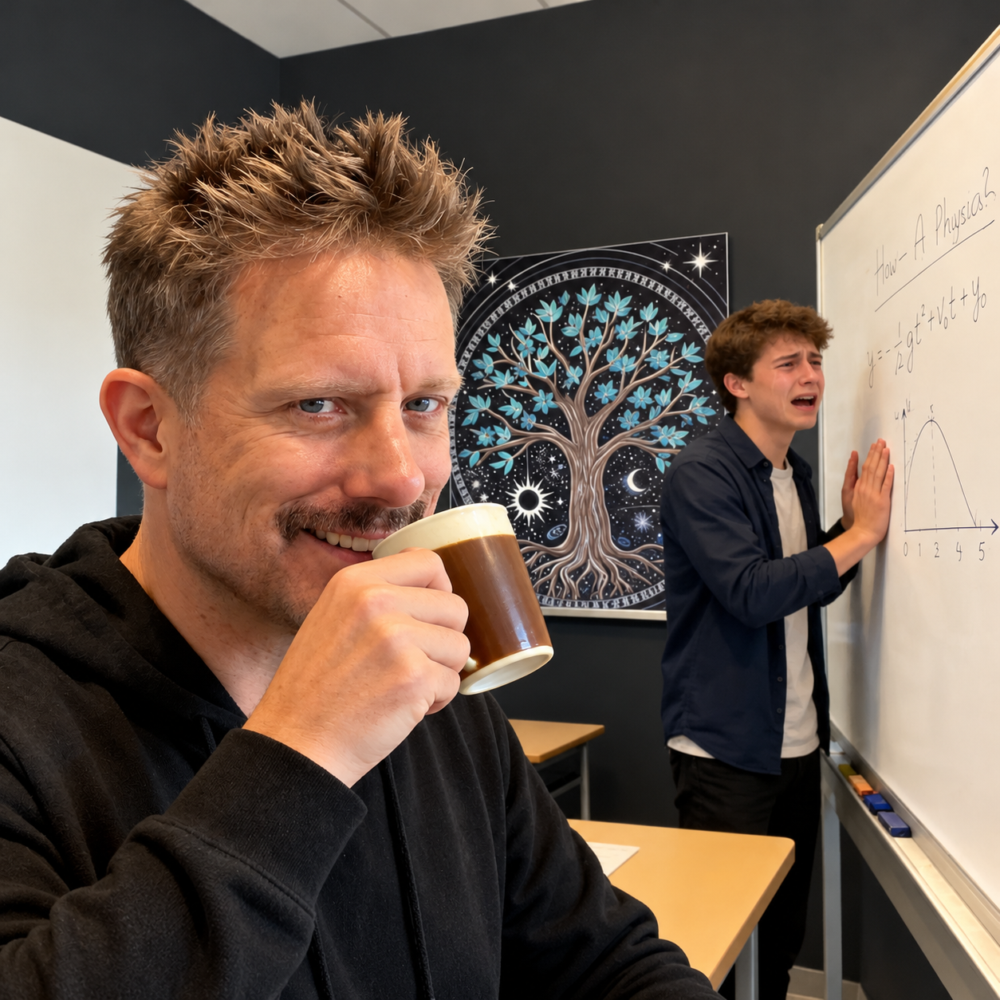

University Physics and Classical Mechanics
Develop your Python programming skills with John! He guides you through coding physics problems using NumPy and SymPy, helping you understand the logic, syntax, and physics behind every line of code. Through guiding questions, interactive coding challenges, debugging exercises, and comparisons of alternative approaches, he helps you build confidence in scientific programming—without simply writing the code for you.
"Tell me and I forget. Teach me and I remember. Involve me and I learn." - Benjamin Franklin
College Physics and University Physics
Develop your Phase A project idea with Liu! She helps you explore research questions, evaluate project feasibility, identify relevant physics, plan computational and numerical approaches, and establish realistic milestones. Through thoughtful questions and constructive feedback, she guides you toward a well-structured proposal—without writing it for you.
"Learning is a treasure that will follow its owner everywhere." - Chinese Proverb
College and University Physics
Develop your scientific writing skills with Zara! She guides you through preparing clear, well-structured laboratory reports for University Physics I and II using Jupyter notebooks. Through guiding questions, constructive feedback, and thoughtful suggestions, she helps you organize your report, explain physical theories, present experimental results, and interpret uncertainties—without writing the report for you. Once completed, Zara provides an overall review that you include, along with your own reflections, as a final AI-assisted self-assessment in your lab report.
"The best way to predict the future is to create it." - Dr. Mae Jemison
University Physics
Develop your physics problem-solving skills with Freja! She guides you through a systematic approach to solving problems in calculus-based University Physics I and II. Through guiding questions, conceptual challenges, and progressively helpful hints, she helps you analyze physical situations, construct appropriate diagrams, identify constraints, select relevant physical principles, and develop mathematical solutions. Rather than simply providing answers, Freja encourages you to think like a physicist, explain your reasoning, and evaluate whether your results make physical sense—building the confidence and independence needed to tackle unfamiliar physics problems.
"An expert is a person who has made all the mistakes that can be made in a very narrow field." - Niels Bohr
University Physics
Develop your data analysis and uncertainty skills with Hana! She guides you through analyzing experimental data in calculus-based University Physics I and II. Through guiding questions, practical examples, and progressively helpful hints, she helps you understand measurement uncertainties, apply statistical methods, propagate uncertainties, perform Monte Carlo simulations, and evaluate mathematical models against experimental data. Rather than simply performing calculations for you, Hana encourages you to justify your assumptions, interpret statistical results, and critically evaluate what your data actually reveal—building the confidence and independence needed to draw meaningful scientific conclusions.
学問のすばらしさは、知識が増えるほど、未知の世界が広がっていくことです。" - "The beauty of learning is that as knowledge increases, the unknown world expands." - Takeo Arishima
College Physics and University Physics
Develop your conceptual understanding and physical intuition with Andre! He guides you through exploring the fundamental principles of calculus-based University Physics I and II. Through Socratic questioning, thought experiments, conceptual challenges, and progressively helpful hints, he helps you understand the physical meaning behind equations, recognize common misconceptions, connect different physics concepts, and predict how physical systems behave. Rather than simply providing explanations or correct answers, Andre encourages you to question your assumptions, articulate your reasoning, and test your understanding against physical principles—building the confidence and independence needed to think critically and reason like a physicist.
"Education is the most powerful weapon which you can use to change the world. - Nelson Mandela

Kindergarten Physics - Helping students become better learners by understanding how they learn.
Become a more confident and independent learner with Prof. Kim Nielsen! Through Socratic questioning, evidence-based reflection, and constructive feedback, he helps you critically evaluate your work, identify strengths and weaknesses, and develop effective learning strategies. Rather than simply telling you what went wrong or what to study next, Kim encourages you to examine your reasoning, recognize gaps in your understanding, and create realistic improvement plans. Whether preparing for an assessment, reflecting on past performance, or striving for greater mastery, he helps you take ownership of your learning—developing the self-awareness, critical thinking, and independence needed for lifelong success.
"Teachers open the door, but you must enter by yourself.'' - Confucius
Poblem solving sessions
"The pursuit of knowledge is a noble endeavor, and it knows no boundaries." - Jaime Escalante
University Physics, Classical Mechanics and General Relativity
"The journey of a thousand miles begins with one step." - Lao Tzu
College Physics
"Don't be afraid to reach for the stars in your education, because the sky is not the limit, it's just the beginning." - Sylvia Acevedo
College Physics
"You don't have to be rich or famous to be educated. Knowledge is within reach for all." - Stephen Hawking
University Physics and General Relativity
"The more that you read, the more things you will know. The more that you learn, the more places you'll go." - Dr. Seuss
Welcome to The Physics Sphere, your gateway to the captivating world of physics!
The premier destination for unlocking the mysteries of the universe and demystifying the laws that
govern our reality.
My Teaching Philosophy
At The Physics Sphere, my goal is to make physics accessible, engaging, and meaningful to students at all levels.
I believe physics is more than a collection of equations and laws; it is a way of thinking, questioning, and
understanding the physical world around us.
My teaching philosophy centers on the belief that learning physics should emphasize conceptual understanding,
critical thinking, and the ability to apply knowledge to new situations rather than simply memorizing formulas
or procedures.
To support this philosophy, I have developed a tiered, competency-based approach to instruction and
assessment, grounded in standards-based grading and Bloom's Taxonomy. Both instruction
and assessment are organized into four progressive phases, each emphasizing increasingly sophisticated
levels of understanding, reasoning, and application.
The Four Phases of Learning